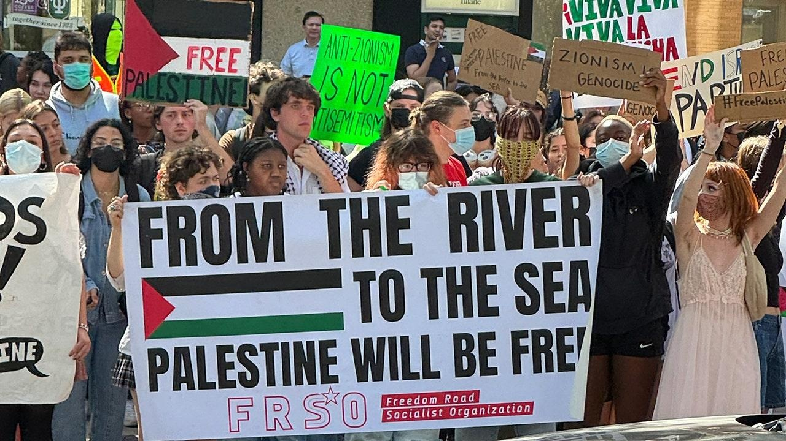

Biden administration to investigate 6 additional schools for discrimination amid Israel-Hamas warThe Department of Education announced this week that an additional six schools across the country are being investigated for discrimination amid the Israel-Hamas war. Investigations into Montana State University, Tulane University, Union College, the University of Cincinnati, Santa Monica College, and Cobb County School District in Georgia, were opened over the past week by the DOE's Office for Civil Rights. The investigations are focusing on cases of alleged discrimination that involve shared ancestry. A DOE spokesperson declined to comment on the investigations, but pointed Fox News Digital to a November press release after opening investigations into several schools after the Oct. 7 terrorist attack by Hamas. "Hate has no place in our schools, period. When students are targeted because they are — or are perceived to be — Jewish, Muslim, Arab, Sikh, or any other ethnicity or shared ancestry, schools must act to ensure safe and inclusive educational environments where everyone is free to learn," said U.S. Secretary of Education Miguel Cardona. "These investigations underscore how seriously the Biden-Harris Administration, including the U.S. Department of Education, takes our responsibility to protect students from hatred and discrimination." At the time, Cornell University, Columbia University, and the University of Pennsylvania were among those being investigated. While the DOE didn't say why it opened the investigations, a pro-Palestinian protest near Tulane in November ended with several people being arrested after three individuals were assaulted. The protest wasn't sanctioned by Tulane, nor was it hosted on its campus, but police from the university were present, according to university President Michael Fitts. Fitts said the protest was "deeply distressing," adding that the demonstration "intentionally" took place on a public sidewalk located outside the university. "Everyone who committed an illegal act on this day will be held accountable for their actions," Fitts said. "We must now lean on our common humanity and the Tulane spirit to find a path forward during these challenging times. Symbols and acts of hatred, anti-Semitism, deliberate provocation and preying upon the fears of others are not part of who we are." A spokesperson for Tulane told Fox News Digital, "The incident at the center of this investigation took place at a rally organized by a group that is not recognized by Tulane." "The rally was deliberately staged on public property contiguous to our campus but over which we have no control. As a result of assaults against Tulane students and a Tulane police officer at the rally, four individuals unaffiliated with the university were arrested on a variety of charges, including hate crimes," the spokesperson said. "Following this incident, Tulane significantly increased security on campus and undertook other measures, including increasing its teaching and trainings regarding antisemitism." The Tulane spokesperson said the university will "fully comply" with the investigation. In a statement to Fox News Digital, a spokesperson for Santa Monica College said it was asked to respond to a complaint regarding an Oct. 19 incident, where its student government improperly denied a charter to Students Supporting Israel, a student organization. "When students brought their concerns to the attention of College administrators, the College took prompt action on October 20, 2023 and shared publicly the steps it took to immediately redress a situation in which the Associated Students’ ICC failed to install Students Supporting Israel at SMC (SSI-SMC) as a club," the spokesperson said. "This prompt action demonstrates the college’s commitment to a discrimination-free environment for all students and was acknowledged by SSI-SMC via a post on their official Instagram account that same day. The college stands against all forms of hate, including anti-Semitism." Fox News Digital reached out to Montana State University, Union College, the University of Cincinnati, and Cobb County School District. Fox News Digital's Peter Aitken contributed to this report. |
 |